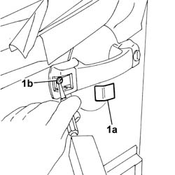
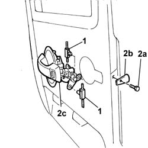
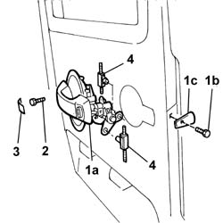

7020F22 rear swinging door exterior handle - r+r
- Path
- Procedures > 70 FITTINGS > 7020 LOAD CARRYING COMPARTMENT DOORS > 7020F rear swinging door closure devices > 7020F22 rear swinging door exterior handle - r+r
- Kind
- repair procedure (removal / refitting; the operation number is the code)
- Applies to
- all engines; all production periods
- Interactive page
- https://sloeber94.github.io/elrnDB-fDbl/en/#/2585087
Applies to: all engines; all production periods
 Removing
Removing
 Refitting
RefittingDisconnect the battery negative terminal.
Op. 7020E34 REAR DOOR FLAP INTERIOR PANEL - R+R
Op. 7020F34 REAR SWING DOOR LOCK INTERIOR MECHANISM - R+R
Op. 7020P22 MOTOR FOR REAR SWING DOOR LOCK - R.R. WITH DOOR PANEL REMOVED
1. Remove the protective cap (1a) and, using an ordinary punch, undo the shear bolt (1b).

Applies to: all engines; all production periods
1. Remove the controls for opening/closing the door via the handle.
2. Undo the bolt (2a), recover the spacer (2b) and remove the handle (2c).

Applies to: all engines; all production periods
Refitting
Removing1. Position the handle (1a) in its seating, and tighten the bolt (1b) after fitting the spacer (1c).
2. Use a new shear bolt and tighten until the head breaks.
3. Fit the plastic protection.
4. Connect the rigid controls for opening/closing the door.

Applies to: all engines; all production periods
Op. 7020P22 MOTOR FOR REAR SWING DOOR LOCK - R.R. WITH DOOR PANEL REMOVED
Op. 7020F34 REAR SWING DOOR LOCK INTERIOR MECHANISM - R+R
Op. 7020E34 REAR DOOR FLAP INTERIOR PANEL - R+R
Connect the battery negative terminal.
Topics linked from this page (3)
- 7020E34 rear door flap interior panel - r+r
- 7020F34 rear swinging door lock interior mechanism - r+r
- 7020P22 motor of rear swinging door lock - r r with door panel removed